Activity: Create a Systems Library
The objective of this activity is to teach the fundamentals of creating a Systems Library and then placing the library into an assembly so that the parts and features associated with that library are correctly positioned.
When you complete this activity, you will know how to use a Systems Library to quickly create components and features, which can be used in many other assemblies. You will learn procedures used during Systems Library creation that make placement of a Systems Library component easy and consistent.
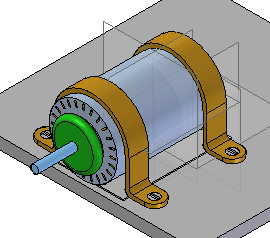
The motor is first placed on the plate. Parts and features that need to accompany the motor in a Systems Library are created on this plate.
The Systems Library consists of a group of parts and features that are meant to be placed many times. First, you assemble the components of the Systems Library in the manner you later wish them to be placed. Once the components are correctly positioned, then you define them as a Systems Library.
In creating a Systems Library, it is important to establish as many relationships as possible between components that are going to be a part of the Systems Library. Relationships to other parts need to be reestablished upon placement, so whenever possible establish relationships with components within the group to speed placement. Establish as many relationships as you can to the first part that is placed.
Open Create_Sys_Lib.asm with all the parts activated.
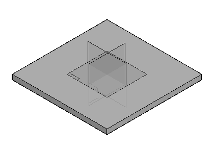
The right (y-z) plane of the part base_plate.par will be used to position the motor on the plate. The assembly reference planes can be turned off.
Hide the assembly reference planes.
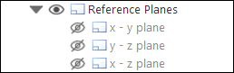
Show the reference planes for the part file base_plate.par. Later, these will be used to position the motor. In PathFinder, right-click base_plate.par and then click Show/Hide Component and select the On check box for Reference Planes.
From the Parts Library, drag motor.par into the assembly. Position the part using the following steps.
Click Options on the command bar and set the options as shown.
Even though the FlashFit option is set, choose the appropriate relationship and leave the default as FlashFit.
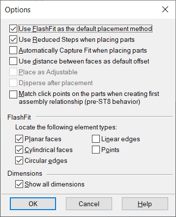
On the command bar, select the Mate relationship, and mate the plane of the foot of motor.par to the top plane of base_plate.par.
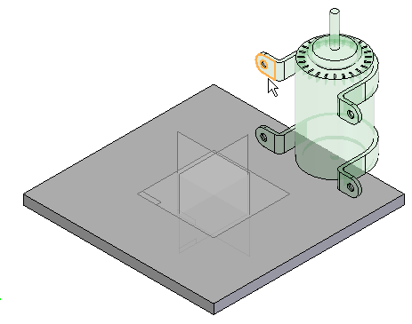
Select the Planar Align relationship, and align the front face of the motor bracket on motor.par with the vertical face of base_plate.par. Set the fixed offset to 15 mm.
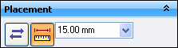
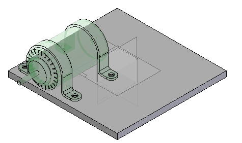
Use the Planar Align relationship to create a relationship between the reference plane of motor.par to the reference plane of base_plate.par. Access the reference planes for the motor by turning on the construction display for reference planes as shown.
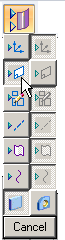
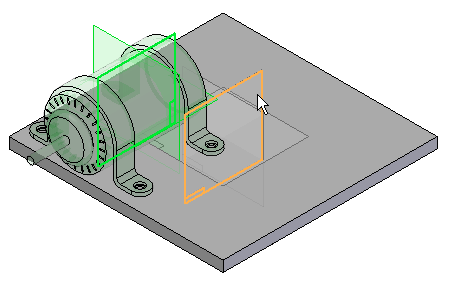
The motor is now centered on the base plate.
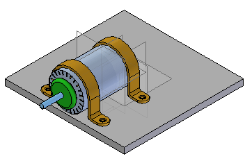
Next, add holes to the base plate. Use the Inter-Part Copy command to associate the holes with the corresponding geometry on the motor.
Click the File tab.
Click Settings→ Options.
Click the Inter-Part tab and set the options as shown. Then click OK.
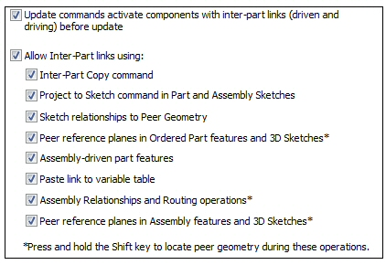
In Assembly PathFinder, right-click base_plate.par, and then click Edit.
When editing a part in the context of an assembly, use the View tab→Show group→Hide Previous Level command to turn off the view of the rest of the assembly. For the upcoming steps, however, do not hide the assembly.
If you cannot see the motor, choose the View tab→Show group→Hide Previous Level command
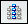
.Choose the Home tab→Clipboard group→Inter-Part Copy command .
Select motor.par as the assembly part to copy from. Select the bottom plane of each foot as the faces to copy.
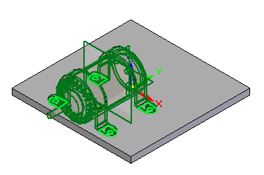
Click the Accept button, and then click Finish to place the Inter-Part Copy.
Place features on the plate. These features become part of the systems library and will be placed as features in the target part at the time of placement.
Choose the View tab→Show group→Hide Previous Level command to turn off the display of motor.par.
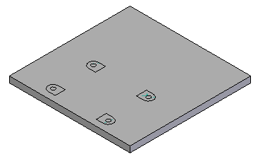
Choose the Home tab→Solids group→Hole command .
Click Hole options and set the values as shown, and then click OK.
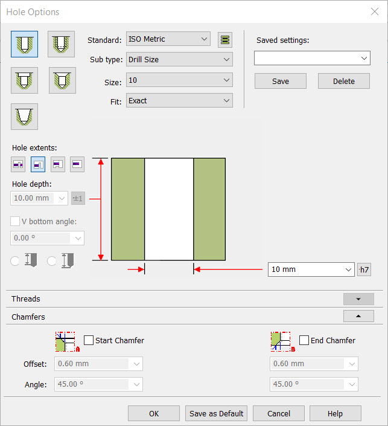
Select the reference plane shown in the image. Use the N key on the keyboard to orient the reference plane as shown.
When creating features for a Systems Library, it is good practice to orient the reference plane consistently for all the features.
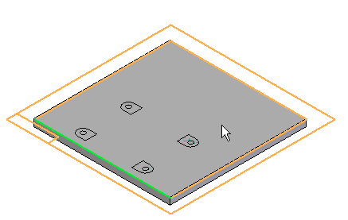
Place four Through All holes using the center of the Inter-Part surfaces to place the holes.
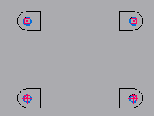
Choose the Home tab→Close group→Close Sketch command .
On the command bar, click Finish.
Choose the Cut command
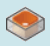
.The reference plane is created from the top face of the plate. Use the N key to orient the reference plane as shown.
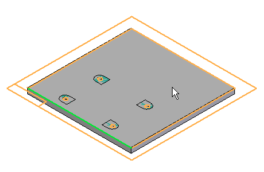
Choose the Project to Sketch command and set the options as shown, and then click OK.
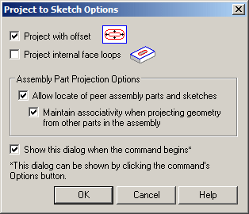
As shown below, offset the bold lines a distance of 5 mm from the Inter-Part construction surfaces.
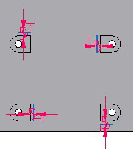
Choose the Trim Corner command , and trim the 4 offset lines as shown.
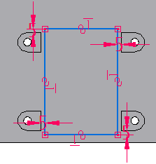
Choose the Close Sketch command . On the command bar, enter 7.5 mm for the extent of the cutout.
Click to define the direction of the cutout into the part. Click Finish to complete the cutout.
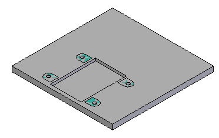
Choose the Round command . Select the top edges of the cutout, and enter a radius of 2.5 mm. Preview and finish the round.
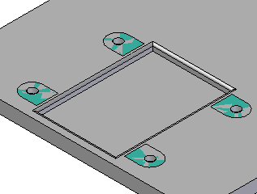
Choose Close and Return to return to the assembly.
Drag 10mm_cs_screw.par into the assembly.
Using FlashFit, select the circular edge of the screw, and then select the circular edge of the hole in the foot of the motor as shown.
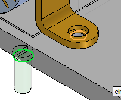
The screw is placed.
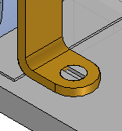
Drag 10mm_nut.par into the assembly.
It is good design practice when creating a Systems Library to position subsequent parts relative to a single part that will be included in the Systems Library. In this case, the plate will not be a part of the Systems Library, but the features on the plate will be. Because all the features need to be placed relative to the motor, the motor will be used to establish as many relationships to as possible.
To establish relationship 1, Axial Align the cylindrical axis of 10mm_nut.par with the cylindrical axis of the hole in motor.par.
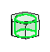
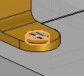
Mate the top face of the hex face of 10mm_nut.par to the bottom face of base_plate.par.
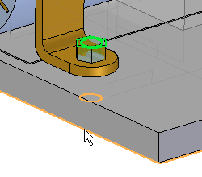
Click the Select tool to exit the Place Part command. Select 10mm_nut.par in Assembly PathFinder, and in the lower plane, click the Axial Align relationship.
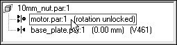
Lock the rotation.
The nut is positioned.
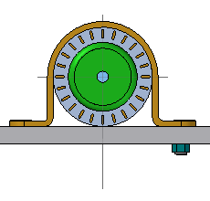
The pattern in motor.par will be used to pattern the fasteners.
Choose the Pattern command  .
.
In Assembly PathFinder, select 10mm_cs_screw.par and 10mm_nut.par to be included in the pattern, and then click the Accept button.
When prompted to select the part that contains the pattern, select the motor.
Select the pattern shown.
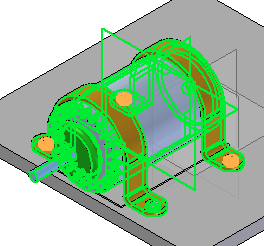
Select the reference feature shown, and then click Finish to place the pattern.
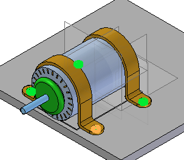
All the components of the Systems Library are in place and can now be stored. Create the Systems Library.
Choose the Home tab→Components group→Create Part In-Place list→Systems Library command .
In the Assembly PathFinder, select all parts except base_plate.par.
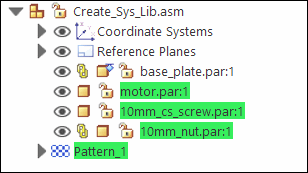
The dialog box showing the set of parts to be added to the Systems Library is displayed.
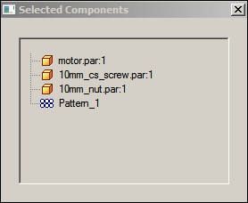
Click Next on the command bar.
The dialog box showing which features are to be included in the Systems Library is displayed.
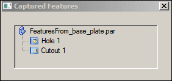
Add the Round feature to the selection set, by clicking on the feature in the assembly window.
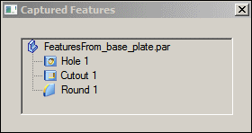
Click Next on the command bar.
The dialog box showing the Captured Relationships is displayed. Click OK.
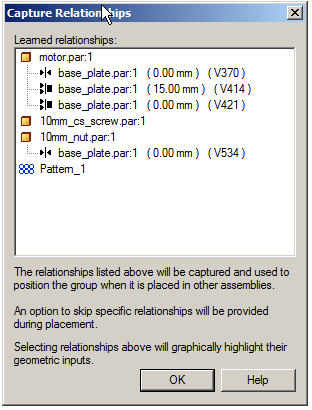
Click Create on the command bar.
Name the new systems library motor_assembly.asm. Fill in the appropriate boxes in the dialog box. Make sure the new file location is the folder containing the lab files for this activity.
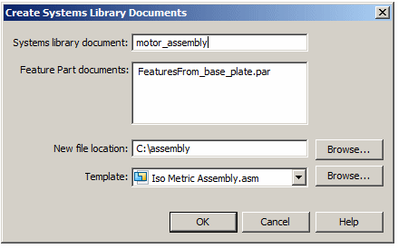
Click OK.
The Systems Library is now created. Save and close the assembly.
To place the Systems Library, you will create a new assembly with a plate. You will place four occurrences of the Systems Library on the plate.
During creation of the Systems Library, care and consideration was given in orienting the reference planes consistently for each feature, and as many relationships as possible were established to motor.par. This makes accurate placement easier.
Create a new assembly file. Save the assembly file as newplate.asm.
Drag newplate.par into the assembly window.
Hide the assembly reference planes.
Right-click newplate.par and click Show/Hide Component, and then select the check box for Reference planes. These will be used to position the Systems Library components on the plate.
Drag motor_assembly.asm into the assembly window.
The first relationship to be established is the Mate between the foot of the motor and the top face of the plate. Select the top face of newplate.par
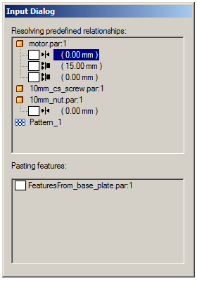
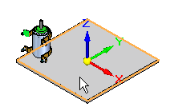
Establish the Planar Align relationship with the 15 mm offset. Click the front face of newplate.par.
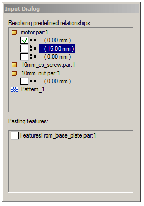
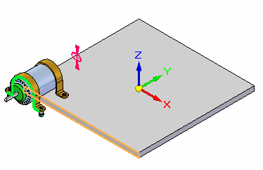
Now the Mate relationship between the reference plane of the motor and the reference plane of the plate is to be established. Click the reference plane shown.
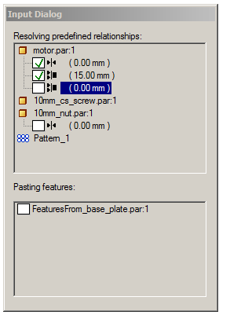
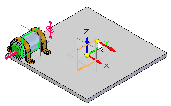
Place the 10mm_nut.par. Establish the Mate relationship with the bottom plane of the plate.
Notice that no action is required to place the screws. This is because all the relationships needed to position the screws were established relative to the motor.
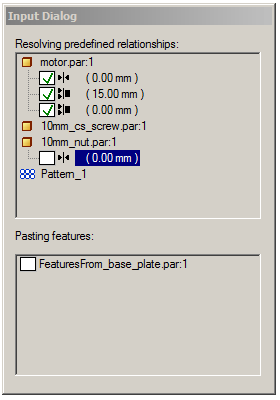
Click the bottom face of newplate.par.
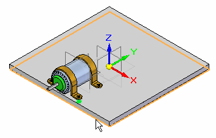
Place the Cutout feature and the Round feature on the plate.
The orientation of the reference plane selected to place the features will be consistent with the orientation at the time of their creation.
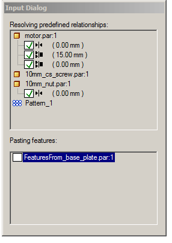
Position the mouse so that the reference plane associated with the top face of newplate.par highlights. If needed, use the N key to orient the reference plane as shown, then click.
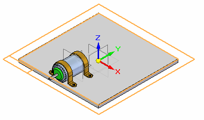
The Systems Library component has been placed.
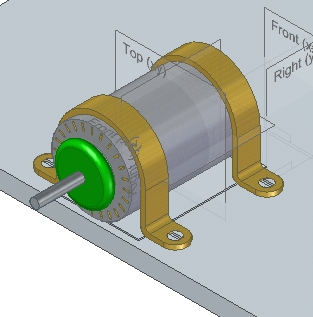
In Assembly PathFinder, right click newplate.par and then click Show Only. You will see the Systems Library placed holes for the screws as well as the cutout and rounds under the motor.
Save this assembly as newplate.asm, but do not close.
In Assembly PathFinder, right-click the newplate.asm and then click Show All.
Repeat the placement of motor_assembly.asm on the other 3 sides of newplate.par. Remember to orient the reference plane correctly when placing the features.
This completes the activity.
In this activity you learned how to place components into an assembly and define them as a Systems Library. Relationships were, when possible, established to the first part in the Features Library. Care was taken in creating profile based features such that the reference plane was oriented consistently for each feature. When the Systems Library was placed, the reference plane orientation for placement was consistent with the orientation used to create the feature.
-
Click the Close button in the upper-right corner of the activity window.
Answer the following questions:
-
What is the definition of a systems library?
-
How are features, such as holes and cutouts linked to the system library?
-
When placing assembly components in an assembly to be used in a systems library, is it good practice to define as many relationships as possible to a single component that is part of the systems library?
-
When creating features that will be placed on target components of systems library, is it good practice to keep the reference plane orientation the same for each feature?
-
What is the definition of a systems library?
A systems library is a group of assembly components and features that can be repeatedly placed. Features that typically be needed on target parts, such as cutouts and holes can be stored and placed as the systems library is placed.
-
How are features, such as holes and cutouts linked to the system library?
When creating features to be placed on the target assembly component, the features are linked by inter-part geometry.
-
When placing assembly components in an assembly to be used in a systems library, is it good practice to define as many relationships as possible to a single component that is part of the systems library?
It is good practice to have as many relationships as possible to the one of the components in the systems library. Relationships that need to vary because of differences in target part geometry (such as varying plate thickness) do not need to be defined by the relationships to another member in the systems library.
-
When creating features that will be placed on target components of systems library, is it good practice to keep the reference plane orientation the same for each feature?
When creating features that will be placed on target components of systems library, it is good practice to orient the reference plane the same for each feature.